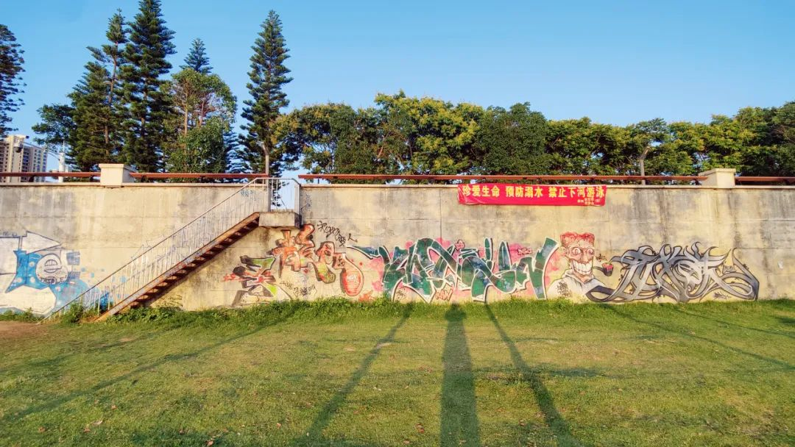

共计3547个字，54张图
三册柏和宝藏山在《04 有些答案不必等》中提到了一个量表，用来对话仿生人和人类。量表的名字叫沃伊特·坎普夫量表——一种通过测量被测者在面对假想道德情景时不可控身体反应的同理心测试。
这首歌很有趣，是一些对话组成的：
“
为什么乌鸦的味道尝起来会像黄昏?
(我最后一次看到黄昏是二十年前)
八十岁还荡秋干吗?
(如果你问的是我，我想我会的，如果我能活到八十岁)
”
上上个周六回国，我的记忆好像一直在整理。能保持科研上的事情都井然有序已是一件不甚容易的事。和组里的好朋友吃完晚餐，到网球场已经是周五晚十点。唱歌、溜达、去后街的马来西亚和印度混合口味，回寝已是凌晨一点。听着后摇整理到凌晨五点，终于把该打包的东西都归仓。不想下次返校面对一堆不知所由不明所起的东西。
马和骡，就差在一个累。看看MidJourney的刻板印象
回国的机票在三五天前订下，虽迟但到。看看机票，周六下午三四点飞、晚上八九点到福州，周六四五点飞长沙、六七点到。能有二十二个小时在福州，真好~
师兄biiiiigman是顶有趣的人。我说想去看平潭的蓝眼泪，问要不要我在新加坡没起飞的时候就先租一辆车在福州机场，租它一整天夜袭平潭。平潭离台湾很近，已经修筑起了一座离台湾最近的公铁两用跨海大桥，离新竹68海里，是大陆离台湾最近的地方。然而biiiiigman说不着急，福州本地人去蓝眼泪的话都是先看晚上有没有直播：有直播间专门以此为生，有蓝眼泪我们再长途奔袭过去不急。
据说，蓝眼泪是因为平潭的一种夜光藻，又称涡鞭毛藻。早两年就跟LRL和豆一岚说计划去看蓝眼泪，不过计划一直没能提上日程（抱歉）据说这种夜光藻体内含有荧光素、荧光素酶，大量聚集的时候，师兄和我猜测这里潮汐涨落、尔后各层之间的流变性质不均一、在界面处形成了摩擦和撞击，这里构成了一个对于藻类生物的外加应力。这些应力与距离叠合成能量，便催动了藻类的生物自发光。
每年春夏之交的四月初到六月初，是蓝眼泪的爆发时期。但也不是每天都有。能看到蓝眼泪的时候，都意味着撞大运。师兄看我就只在福州中转一天，不料来的是个特种兵（笑）可以简单记述这种行为为“追泪”
师兄天真烂漫，白天在单位里累到人麻，晚上被不要脸的师弟约出来拉练（笑）
好久不回国开车，合理地搞错了好几次左右舵的雨刮和灯光、、）师兄看直播，我开车，就这样一百公里从长乐机场夜袭平潭小村庄。平潭岛有长长的海岸线，有一个小程序专门关于平潭旅游：哪里观星、哪里看蓝眼泪、哪里看日出日落。Biiiiigman有很多执着在，说这哪有直播准。于是我们照着一个直播的地址去。
时间转到快十一点，我们在离海湾三个山头的地方停车，和一路上能看到人群的游客们汇成一队：大家都是去看蓝眼泪的。换上人字拖、带上相机和镜头，摸黑夜色，看得清或者看不清都不要紧，四周的人在黑的地方都纷纷举起了手电来照亮旁边，不肖急着自己打灯。
穿过平潭的小村庄，村民们有的从自家屋中伸出了水管方便游客冲洗。贩卖淀粉肠、烟花爆竹和各种小玩意的商贩在路上聚集，是生活之外的但也是生活气息。
穿过小树林，走到小湾。甚至有些明亮的夜幕下，两侧山上的风电站像支撑柱一般将整片夜空的思路封锁在一浪又一浪涌往岸边的蓝眼泪。蓝眼泪真实可感，都能看到深蓝色的浪头从离岸十几米远的地方给到头部，一阵呼啸，尔后在水岸线上卸力、淬灭。
蓝色丝绒开出裂缝
这就是很妙的缘起性空。观感上看到的是深蓝色的浪头慢慢形成，最后在岸边无力消弭。深夜星空下，缘起说宇宙原理“诸法因缘生诸法因缘灭”，而性空说这些因缘合生的内容本身是假有的自性不空则不能有即“真空生妙有”。缘起性空不是说因为这些生合缘灭因为性空而在有无上没有意义，而指向着经历这一程的美妙。我们看到的蓝眼泪生于无、而归于无，但有一个浪头距离的绚烂，这就是一个很巧妙的自然解释。
师兄没有穿拖鞋来海湾，我则一路提着相机走进了海湾深处。等浪的时候，回想起在马来西亚的海岸边冲浪时等追风浪头。倏忽抬脚对着水里就是一踢，海水包裹着脚就像小时候打拳皇里的大门五郎，抬脚就是一片夜光。
海边有一些根本不懂何为生物自发光的人，还开着闪光灯在岸边拍来拍去。最后当然只能拿到一片脏兮兮的海滩照*
退回水边跟师兄聊天。蓝眼泪涌到海边之后，甚至会在岸边又停留一会，把刚才这个浪头亲和沙滩的边缘给勾勒出来。这种蓝还不是天青蓝，不是瑞利散射。也不是那种简单的海洋蓝，这种蓝不深邃，很欢乐。在黑夜里就偏似一出游民闽剧。
蹲下来，在沙滩上刚刚被海水浸润的地方用手指戳一戳，还能看到周围几公分的沙堆里都因手按下的压力而发出黑夜中明晰可见的光。师兄拿来周边人手里的水瓶，接了小半壶刚冲上来的海水，拧上盖子，在手里上下一晃，便看到了又一出蓝眼泪但是在小瓶之中。
转钟过后，游人渐渐散去。我们也是游客，也随之退潮。不断地还有人来，问着前面的人还要走多远才会到海边看到蓝眼泪。摸黑的礁石在我的脚趾上留下了一个印记，到今天才愈合了个七七八八。
我说我厦航的飞机餐都比我在北纬一度吃的好吃。
星夜一百公里，奔袭回福州市区。
我走到闽江边坐下来，许些不知道是早行人抑或也和我一样通宵了的人，在闽江边摊开了防潮垫来坐下闲聊。好像这么聊着聊着，天就会亮似的。以前和好朋友说总不喜欢日出，因为日出之后一切都会从喑哑变得嘈杂。深以为然。

我喜欢探的店也就是这样。不同于开在路边独栋的安泰酒楼，安泰食堂是一个开在社区里的店。我们需要跟着电动车一起爬上曲曲折折的社区楼层，然后找到一个和社区里本地土著们一起吃饭的店。
我知道的对于湘菜，一些连锁品牌的经营策略是迎合外地人对本地菜系的固有偏见。比如觉得湘菜很辣，毕竟头牌是那一道剁椒鱼头，于是就专门在菜里面摆上大红辣椒，搞得食客们看起来啧啧称奇。虽然骗不到本地老饕，但是可以迎合外地人的固有偏见，觉得真的吃到了理想中的湘菜，固有偏见遂而加深。所以我想去探店的时候不管好吃不好吃、对不对我的胃口，至少到了一个地方我就应该找到当地人也会去吃的特色菜式，这样才不是站在我的角度去对一家店指指点点，而是真的到了那个地方。
正愁着点菜的时候，金鱼姐妹直接出现在biiiiigman和我的身后：招牌荔枝肉、沙鱼皮酸辣汤、葱油花蛤、爆炒双脆、海蛎煎蛋。真好，完美，本选择困难症患者太需要有决断力的队友。唐沫茶兮的木梨馥味道好像茶颜悦色的凤栖绿桂，我一度喝到幻视。
聊着聊着，时间转到下午一点四十。是时候为这次回家的福州中转特种兵之行做一个结束咯。撞到大运、玩得很好也吃得很好，是时候从福州市区离开咯~ 两点十分坐上离开福州市区的大巴。一个小时后到长乐机场，飞回长沙。